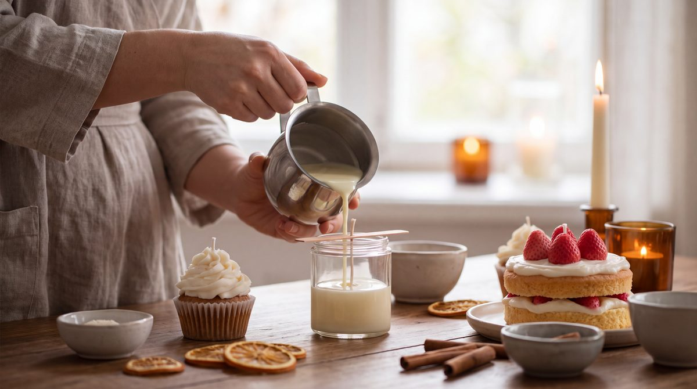

Candle Making
Why is my candle tunneling?
The wick is usually too small for the container, so the melt pool never reaches the edges. Short burns make it worse.
The Big Book of Sweet Dessert Candles
Candle Making
The right wax for the job, a wick sized to the vessel, a measured fragrance load and the right temperatures: the basics that decide whether a candle tunnels, sweats or burns evenly.

The book's reference numbers for coconut wax. Use a thermometer, not your eye.
Container wax melts at about 43–47 °C and clings to glass. Mold (pillar) wax melts at about 57–63 °C, releases cleanly and holds its shape as it burns. Swap them and you get wet spots in the jar, or a pillar that collapses into “a pool of oil on your table”.
| Vessel | Wick used in the book |
|---|---|
| 250 ml glass | 24-strand braided cotton, or wooden |
| 13 cm cake mold | 45-strand braided cotton |
| Botanical pillar, 10–11 cm | 24-strand |
| Small container, 3–7 cm | At least 10-strand |
Then test it: after a 7-day cure, the melt pool should reach the edges in 1.5–2 hours at about 1 cm deep. With dried flowers, use braided cotton only.
The book's first project: a single 250 ml glass of coconut wax, decorated with stones or dried flowers.
| Material | Amount |
|---|---|
| Coconut container wax | 180–185 g (100%) |
| Fragrance oil or essential oil | 19–22.8 g (10–12%) |
| Wooden wick, or 24-strand braided cotton | 1 |
| Wick holder + double-sided sticker | 1 each |
Knowledge articles
Candle Making
The wick is usually too small for the container, so the melt pool never reaches the edges. Short burns make it worse.
The Big Book of Sweet Dessert Candles
Candle Making
Match the wick to the container's diameter and your wax, then confirm it with a burn test. The book calls this one of the hardest parts of candle making.
The Big Book of Sweet Dessert Candles
Candle Making
Cure the test candle 7 days, light it and time the melt pool: it should reach the edges in 1.5–2 hours at about 1 cm deep.
The Big Book of Sweet Dessert Candles
Candle Making
Temperature changes as the wax sets: a cold room, a hot pour, a cold or thick-bottomed glass, drafts, or candles too close together.
The Big Book of Sweet Dessert Candles
Candle Making
Most often the pouring temperature. Vessel shape, fragrance amount and pouring speed also play a part. A heat gun fixes it after 24 hours.
The Big Book of Sweet Dessert Candles
Candle Making
Container wax melts lower (about 43–47 °C) and clings to glass. Mold (pillar) wax melts at about 57–63 °C, is harder and smoother, and holds its shape as it burns.
The Big Book of Sweet Dessert Candles
Candle Making
The book works mainly with coconut wax, and also uses soy wax and white beeswax. It prefers natural waxes to mineral ones.
The Big Book of Sweet Dessert Candles
Candle Making
10–12% of the wax weight. For example, 19–22.8 g of fragrance in 180–185 g of coconut wax.
The Big Book of Sweet Dessert Candles
Candle Making
Melt fully at about 70 °C, add fragrance at 55–60 °C, pour at 55–60 °C, and never exceed 85 °C.
The Big Book of Sweet Dessert Candles
Candle Making
Let it set 24 hours, trim the wick to 0.5 cm, cure 7–10 days, then burn 1.5–2 hours at a time until the whole surface melts, never more than 3 hours.
The Big Book of Sweet Dessert Candles
Candle Making
Use a heat-rated double-sided wick sticker on a dust-free glass, not a drop of wax.
The Big Book of Sweet Dessert Candles
Candle Making
Use oil-soluble ('F') or mixed ('F+P') candle dyes, crayons, mica or natural colorants, added gradually. Never use water-based paints.
The Big Book of Sweet Dessert Candles
Candle Making
Gel needs far more heat than wax: melt it over intensely boiling water to 90–105 °C (never above 110 °C) and stir with a glass rod.
The Big Book of Sweet Dessert Candles
Safety
Melt wax only in a double boiler, never over an open flame, never let it exceed 85 °C, and smother any wax fire with baking soda, never water.
The Big Book of Sweet Dessert Candles
Go deeper
Waxes, wicks, dyes and gel, then cakes, cupcakes, cocktails and botanicals, plus perfumes, diffusers and a massage candle.